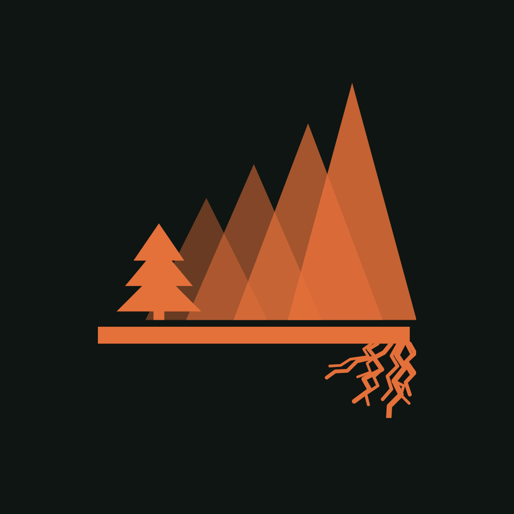
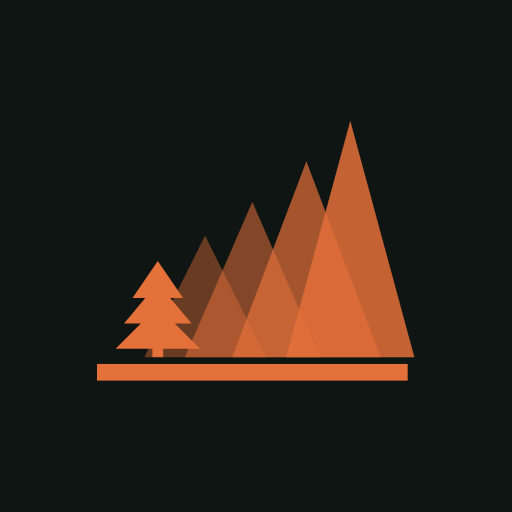
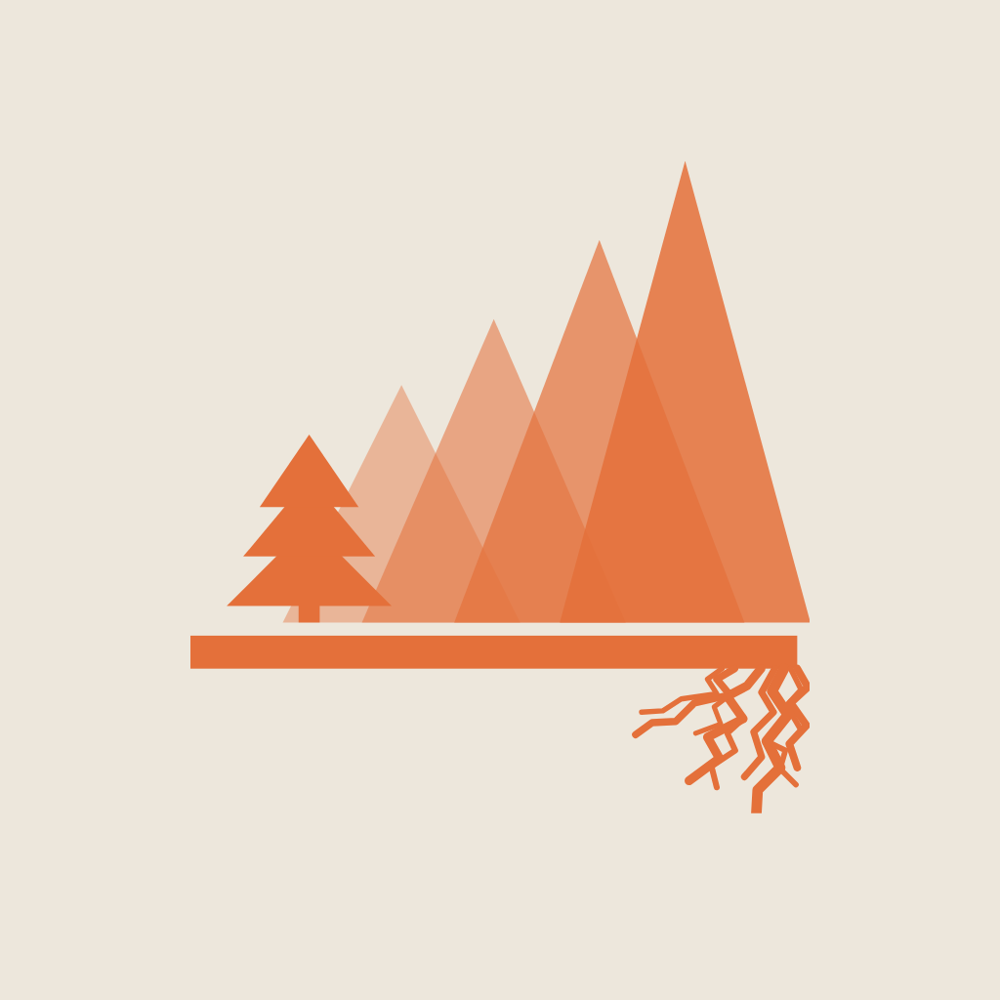

Profile marks and banners for Facebook, Nextdoor and Google Business Profile. This page is the proof: every asset shown at the size it will actually be seen at, and every banner shown under the crop it will actually get.
All three platforms crop the avatar to a circle. The large sizes are what you upload; the small ones are what a neighbour actually sees next to a comment. The roots stop reading below roughly 96px — which is why there is a crest-only variant underneath.
Full mark, with roots — sixfold-profile-ember-1024.png

Crest only, no roots — sixfold-profile-ember-small-512.png

Square crop, and the light-ground alternate

The dashed band is what survives a narrower crop. Facebook shows a page cover wider on desktop than on a phone and takes the difference off the sides; Nextdoor and Google crop to their own frames. Nothing that matters is allowed outside the band.
sixfold-banner-facebook-1640x624.png · 1640 × 624 · shown with a phone-width crop probe
sixfold-banner-16x9-1920x1080.png · 16:9 · Nextdoor and general use
sixfold-banner-16x9-1024x576.png · 16:9 · Google cover photo
| Platform | Slot | File | Where the size came from |
|---|---|---|---|
| Google Business Profile | Logo | sixfold-profile-ember-720.png | Verified — Google documents 720×720 recommended, 250×250 minimum, JPG or PNG, 10 KB–5 MB |
| Cover photo | sixfold-banner-16x9-1024x576.png | Google publishes no cover aspect ratio — only the 720×720 figure above. 16:9 is a working choice, not a documented spec | |
| Facebook page | Profile | sixfold-profile-ember-1024.png | Meta's help centre refuses automated requests. 1024 square clears every plausible minimum |
| Cover | sixfold-banner-facebook-1640x624.png | 2.63:1 is the long-standing page-cover proportion, not confirmed first-party. Check the upload dialog | |
| Nextdoor | Profile | sixfold-profile-ember-1024.png | Nextdoor publishes no image specs. Square, oversized, safe |
| Cover | sixfold-banner-16x9-1920x1080.png | 16:9 as the safe general ratio. Confirm in the page editor |